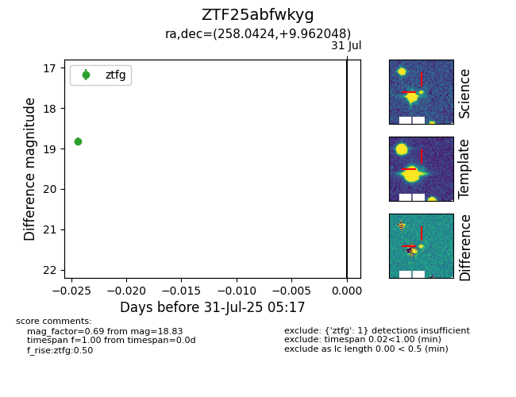

Target ZTF25abfwkyg at 2025-07-31 05:17, see:
FINK: fink-portal.org/ZTF25abfwkyg
Lasair: lasair-ztf.lsst.ac.uk/objects/ZTF25abfwkyg
ALeRCE: alerce.online/object/ZTF25abfwkyg
alt names
ZTF25abfwkyg (ztf,fink)
coordinates:
equatorial (ra, dec) = (258.0424,+9.96205)
galactic (l, b) = (30.7195,+26.53852)
photometry
last ztfg=18.83
1 ztfg detections
